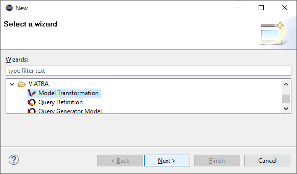
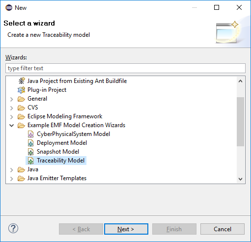

This exercise helps the audience to create a simple batch transformation using the VIATRA Transformation API. The transformation will transform the hosts and applications in a CPS model to a deployment model. The exercise also covers registering a menu command which initializes the transformation.
Create transformation
For the transformation, we have to created a VIATRA Query Project (the one from the query development tutorial could also be reused), and create a new query file called CpsXformM2M.vql to store the patterns we want to use in the transformation with the following contents:
import "http://org.eclipse.viatra/model/cps"
import "http://org.eclipse.viatra/model/deployment"
import "http://org.eclipse.viatra/model/cps-traceability"
pattern hostInstance(hostInstance : HostInstance) {
HostInstance(hostInstance);
}
pattern applicationInstance(
appType : ApplicationType,
appInstance : ApplicationInstance
) {
HostInstance.applications(_, appInstance);
ApplicationType.instances(appType, appInstance);
}
/**
* Traceability link access
*/
pattern cps2depTrace(
cps2dep : CPSToDeployment,
trace : CPS2DeploymentTrace,
cpsElement : Identifiable,
depElement : DeploymentElement
) {
CPSToDeployment.traces(cps2dep, trace);
CPS2DeploymentTrace.cpsElements(trace, cpsElement);
CPS2DeploymentTrace.deploymentElements(trace, depElement);
}-
Create transformation class in Xtend
-
Create new Model Transformation with the wizard
Figure 1. Model Transformation Wizard - Create new transformation -
Setup the name of the transformation and click Next
Figure 2. Model Transformation Wizard - Name of the new batch transformation -
Setup the type of the transformation to BatchTransformation and click Finish
Figure 3. Model Transformation Wizard - Type of the new transformation
-
In the created file we have to register a few extension methods, more specifically for our used queries (CpsXformM2m
/** VIATRA Query Pattern group **/
val extension CpsXformM2M cpsXformM2M = CpsXformM2M.instance
/** EMF metamodels **/
val extension DeploymentPackage depPackage = DeploymentPackage.eINSTANCE
val extension TraceabilityPackage trPackage = TraceabilityPackage.eINSTANCE-
Constructor will also initialize transformation (replace the generated one)
-
It assumes that the resource and trace models are already created
-
The IModelManipulations implementation is used to make model access replaceable, this way the same transformation may be used for cases where the resource set is transactional. The initialization of this is generated automatically into the
createTransformationmethod.val CPSToDeployment cps2dep new(CPSToDeployment cps2dep, ViatraQueryEngine engine) { this.cps2dep = cps2dep resource = cps2dep.deployment.eResource this.engine = engine prepare(engine) createTransformation }
-
-
Transformation will remain active until disposed is called (there is a generated
disposemethod in the class) -
Create a rule to generate DeploymentHosts for each HostInstances
-
The
BatchTransformationRuleFactoryextension provides a builder API for rule definition -
A VIATRA query is used as precondition to the rule, which means the rule will be activated each time the given pattern when changes allowing to update the output accordingly.
val hostRule = createRule.precondition(HostInstanceMatcher.querySpecification).action[/*Action part*/].build
-
-
Specify which action to run when the rule fires. It will create the transformed
DeploymentHostelement in the output model as well as a trace element associating the sourceHostInstanceand the targetDeploymentHost:val hostRule = createRule.precondition(HostInstanceMatcher.querySpecification).action[ val cpsHostInstance = it.hostInstance val nodeIp = cpsHostInstance.nodeIp println('''Mapping host with IP: «nodeIp»''') /** Create & initialize DeploymentHost in output model **/ val depHost = cps2dep.deployment.createChild(deployment_Hosts, deploymentHost) => [ set(deploymentHost_Ip, nodeIp) ] /** Create trace element in trace model **/ cps2dep.createChild(CPSToDeployment_Traces, CPS2DeploymentTrace) => [ addTo(CPS2DeploymentTrace_CpsElements, cpsHostInstance) addTo(CPS2DeploymentTrace_DeploymentElements, depHost) ] println('''Mapped with IP: «nodeIp»''') ].build -
The rule which creates
DeploymentApplicationelements forApplicationInstanceobjects, looks similar. It has to find theDeploymentHostcreated from theHostInstanceto which the sourceApplicationInstanceis allocated, so it assumes thehostRulehas already fired:val applicationRule = createRule.precondition(ApplicationInstanceMatcher.querySpecification).action[ val cpsApplicationInstance = it.appInstance val appId = cpsApplicationInstance.identifier println('''Mapping application with ID: «appId»''') /* Find the DeploymentHost created from the HostInstance to which the source ApplicationInstance is allocated */ val cpsHostInstance = cpsApplicationInstance.allocatedTo val depHost = engine.cps2depTrace.getAllValuesOfdepElement(null, null, cpsHostInstance).filter(DeploymentHost).head /* Create & initialize DeploymentApplication in this DeploymentHost */ val deploymentApplication = depHost.createChild(deploymentHost_Applications, deploymentApplication) => [ set(deploymentApplication_Id, appId) ] /* Create trace element in trace model */ cps2dep.createChild(CPSToDeployment_Traces, CPS2DeploymentTrace) => [ addTo(CPS2DeploymentTrace_CpsElements, cpsApplicationInstance) addTo(CPS2DeploymentTrace_DeploymentElements, deploymentApplication) ] println('''Mapped application with ID: «appId»''') ].build -
Implement the method which performs the transformation using the rules defined above:
-
Since we are using the non-incremental (the whole model is always retransformed on model changes), the output and trace models are to be cleared before the any rule can fire
-
Pay attention to fire the rules in the proper order
def execute() { println('''Executing transformation on: Cyber-physical system: «cps2dep.cps.identifier»''') /* Clear output & trace model for batch transformation**/ cps2dep.deployment.hosts.clear cps2dep.traces.clear /* Fire transformation rules**/ hostRule.fireAllCurrent applicationRule.fireAllCurrent }
-
Create a menu command to execute the transformation
-
Create a UI plugin with the following additional dependencies:
org.eclipse.ui, com.incquerylabs.course.cps.viatra.batch;bundle-version="0.1.0", org.eclipse.viatra.examples.cps.traceability;bundle-version="0.1.0", org.eclipse.viatra.query.runtime;bundle-version="1.2.0" -
Create handler implementation:
TransformHandler.javapublic class TransformHandler extends AbstractHandler implements IHandler { ViatraQueryEngine engine; CPS2DeploymentTransformationViatra transformation; @Override public Object execute(ExecutionEvent event) throws ExecutionException { IStructuredSelection selection = (IStructuredSelection) HandlerUtil.getCurrentSelection(event); CPSToDeployment tracemodel = (CPSToDeployment) selection.getFirstElement(); if (engine == null){ try { engine = ViatraQueryEngine.on( new EMFScope( tracemodel.eResource().getResourceSet())); transformation = new CPS2DeploymentTransformationViatra(tracemodel, engine); } catch (ViatraQueryException e) { throw new ExecutionException(e.getMessage(), e); } } transformation.execute(); return null; } } -
Register handler in the context menu of
CPSToDeploymentelements inplugin.xml:<extension point="org.eclipse.ui.commands"> <command defaultHandler="com.incquerylabs.course.cps.viatra.batch.ui.TransformHandler" id="com.incquerylabs.course.cps.viatra.batch.ui.command" name="Transform"> </command> </extension> <extension point="org.eclipse.ui.menus"> <menuContribution allPopups="false" locationURI="popup:org.eclipse.ui.popup.any?after=additions"> <command commandId="com.incquerylabs.course.cps.viatra.batch.ui.command" style="push"> <visibleWhen checkEnabled="false"> <with variable="selection"> <count value="1"> </count> <iterate> <adapt type="org.eclipse.viatra.examples.cps.traceability.CPSToDeployment"> </adapt> </iterate> </with> </visibleWhen> </command> </menuContribution> </extension>
Execute the transformation
-
Launch Eclipse Application
-
Create a generic resource project
-
Copy a
.cyberphysicalsystemresource in it if you already have one, or create a new CaberPhysicalSystem Model Figure 4. Project with a .cyberphysicalsystem resource
Figure 4. Project with a .cyberphysicalsystem resource -
Create a Deployment model
-
Root element shall be Deployment
 Figure 5. New Deployment Model
Figure 5. New Deployment Model
-
-
Create a Traceability model
-
Root element shall be CPS To Deployment
Figure 6. New Traceability Model
-
-
In the Traceability editor, load both CPS and Deployment models with Load Resources... in the context menu
 Figure 7. Load necessary resources into the Tracebility Model
Figure 7. Load necessary resources into the Tracebility Model -
Set CPS and Deployment references of traceability model in the properties view
 Figure 8. Set the references of the Traceability Model
Figure 8. Set the references of the Traceability Model -
Create a new HostType, HostInstance, ApplicationType and ApplicationInstance in the Deployment model
-
Execute transformation using the created command (on the context menu of the Traceability model root)
Figure 9. Transformation command in the context menu
References
-
VIATRA Transformation API: https://wiki.eclipse.org/VIATRA/Transformation/Transformation_API
-
Further transformation examples: https://wiki.eclipse.org/VIATRA/Transformation/Examples